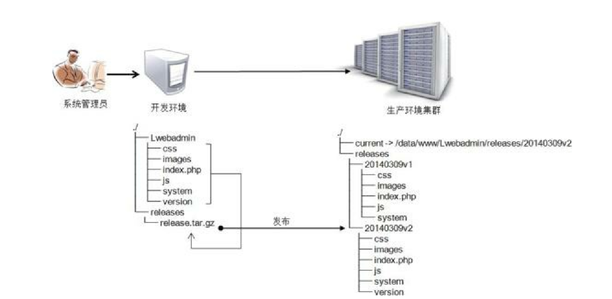

Contents
18.3. 批量运维管理器Fabric¶
18.3.1. 简介¶
Fabric是基于Python2.5以上版本实现的SSH命令行工具，简化了SSH的应用程序部署及系统管理任务。提供了系统
基础的操作组件，可以实现本地或远程shell命令，包括命令执行、文件上传、下载及完整执行日志输出等功能
Fabric在paramiko的基础上做了更高一层的封装，操作起来会更加简单。
官方网站：http://www.fabfile.org
18.3.2. Fabric安装¶
- pip安装
pip install fabric==1.14.0
easy_install fabric
- 源码安装
yum -y install python-setuptools
wget https://pypi.python.org/packages/source/F/Fabric/Fabric-1.8.2.tar.gz --no-check-certificate
tar -zxvf Fabric-1.8.2.tar.gz
cd Fabric-1.8.2
python setup.py instal
eg:
#!/usr/bin/env python
from fabric.api import run
def host_type():
run('uname -s')
输出信息
[root@pxe-server 03.批量运维管理器Fabric]# fab -H 192.168.0.100 host_type
[192.168.0.100] Executing task 'host_type'
[192.168.0.100] run: uname -s
[192.168.0.100] Login password for 'root':
[192.168.0.100] out: Linux
[192.168.0.100] out:
Done.
Disconnecting from 192.168.0.100... done.
@runs_once #主机遍历过程中，只有第一台触发此函数
查看本地与远程主机信息¶
#!/usr/bin/env python
from fabric.api import *
env.user='root'
env.hosts=['192.168.1.21','192.168.1.22']
env.password='SKJh935yft#'
@runs_once
def local_task():
local("uname -a")
def remote_task():
with cd("/data/logs"):
run("ls -l")
输出信息
[root@pxe-server 03.批量运维管理器Fabric]# fab -f simple01.py local_task
[192.168.0.100] Executing task 'local_task'
[localhost] local: uname -a
Linux pxe-server 3.10.0-957.el7.x86_64 #1 SMP Thu Nov 8 23:39:32 UTC 2018 x86_64 x86_64 x86_64 GNU/Linux
Done.
[root@pxe-server 03.批量运维管理器Fabric]# fab -f simple01.py remote_task
[192.168.0.100] Executing task 'remote_task'
[192.168.0.100] run: ls -l
[192.168.0.100] out: 总用量 221060
[192.168.0.100] out: -rw-r--r-- 1 root root 185540433 8月 17 21:57 jdk-linux-x64.tar.gz
[192.168.0.100] out: -rw-r--r-- 1 root root 40824607 8月 17 21:57 vagrant_2.2.4_x86_64.rpm
[192.168.0.100] out:
[192.168.0.103] Executing task 'remote_task'
[192.168.0.103] run: ls -l
[192.168.0.103] out: 总用量 221060
[192.168.0.103] out: -rw-r--r-- 1 root root 185540433 8月 17 21:58 jdk-linux-x64.tar.gz
[192.168.0.103] out: -rw-r--r-- 1 root root 40824607 8月 17 21:58 vagrant_2.2.4_x86_64.rpm
[192.168.0.103] out:
Done.
Disconnecting from 192.168.0.100... done.
Disconnecting from 192.168.0.103... done.
动态获取远程目录列表¶
#!/usr/bin/env python
from fabric.api import *
env.user='root'
env.hosts=['192.168.1.21','192.168.1.22']
env.password="SKJh935yft#"
@runs_once ##主机遍历过程中，只有第一台触发此函数
def input_raw():
return prompt("please input directory name:",default="/home")
def worktask(dirname):
run("ls -l "+dirname)
@task
def go(): #限定只有go函数对fab命令可见
getdirname = input_raw()
worktask(getdirname)
输出信息
[root@pxe-server 03.批量运维管理器Fabric]# fab -f simple02.py go
[192.168.0.100] Executing task 'go'
please input directory name: [/home] /root
[192.168.0.100] run: ls -l /root
[192.168.0.100] out: 总用量 4
[192.168.0.100] out: -rw-------. 1 root root 1863 2月 13 2019 anaconda-ks.cfg
[192.168.0.100] out: drwxr-xr-x 14 root root 184 6月 4 12:52 docbook
[192.168.0.100] out: drwxr-xr-x 3 root root 22 6月 4 13:13 linuxidc-vagrant-project
[192.168.0.100] out:
[192.168.0.103] Executing task 'go'
[192.168.0.103] run: ls -l /root
[192.168.0.103] out: 总用量 4
[192.168.0.103] out: -rw-------. 1 root root 1863 2月 13 2019 anaconda-ks.cfg
[192.168.0.103] out: drwxr-xr-x 14 root root 184 6月 4 12:52 docbook
[192.168.0.103] out: drwxr-xr-x 3 root root 22 6月 4 13:13 linuxidc-vagrant-project
[192.168.0.103] out:
Done.
Disconnecting from 192.168.0.100... done.
Disconnecting from 192.168.0.103... done.
通过Fabric的env对象定义网关模式，即俗称的中转、堡垒机环境。
定义格式为“env.gateway=‘192.168.1.23’”，其中IP“192.168.1.23”为堡垒机IP，
再结合任务函数实现目标主机文件上传与执行的操作
网关模式文件上传与执行¶
#!/usr/bin/env python
from fabric.api import *
from fabric.context_managers import *
from fabric.contrib.console import confirm
env.user='root'
env.gateway='192.168.1.23' #定义堡垒机IP，作为文件上传、执行的中转设备
env.hosts=['192.168.1.21','192.168.1.22']
#假如所有主机密码都不一样，可以通过env.passwords字典变量一一指定
env.passwords = {
'root@192.168.1.21:22': 'SKJh935yft#',
'root@192.168.1.22:22': 'SKJh935yft#',
'root@192.168.1.23:22': 'KJSD9325hgs' #堡垒机账号信息
}
#本地安装包路径
lpackpath="/home/install/lnmp0.9.tar.gz"
#远程安装包路径
rpackpath="/tmp/install"
@task
def put_task():
run("mkdir -p /tmp/install")
with settings(warn_only=True):
#上传安装包
result = put(lpackpath, rpackpath)
if result.failed and not confirm("put file failed, Continue[Y/N]?"):
abort("Aborting file put task!")
@task
def run_task():
#执行远程命令，安装lnmp环境
with cd("/tmp/install"):
run("tar -zxvf lnmp0.9.tar.gz")
#使用with继续继承/tmp/install目录位置状态
with cd("lnmp0.9/"):
run("./centos.sh")
@task
#上传、安装组合
def go():
put_task()
run_task()
实例1:文件打包、上传与校验¶
#!/usr/bin/env python
from fabric.api import *
from fabric.context_managers import *
from fabric.contrib.console import confirm
env.user='root'
env.hosts=['192.168.1.21','192.168.1.22','192.168.1.23']
env.password='SKJh935yft#'
@task
@runs_once
def tar_task(): #本地打包任务函数，只执行一次
with lcd("/data/logs"):
local("tar -czf access.tar.gz access.log")
@task
def put_task(): #上传文件任务函数
run("mkdir -p /data/logs")
with cd("/data/logs"):
with settings(warn_only=True):
##put（上传）出现异常时继续执行，非终止
result = put("/data/logs/access.tar.gz", "/data/logs/access.tar.gz")
if result.failed and not confirm("put file failed, Continue[Y/N]?"):
##出现异常时，确认用户是否继续，（Y继续）
abort("Aborting file put task!")
@task
def check_task(): ##校验文件任务函数
with settings(warn_only=True):
#本地local命令需要配置capture=True才能捕获返回值
lmd5=local("md5sum /data/logs/access.tar.gz",capture=True).split(' ')[0]
rmd5=run("md5sum /data/logs/access.tar.gz").split(' ')[0]
if lmd5==rmd5: ##对比本地及远程文件md5信息
print "OK"
else:
print "ERROR"
@task
def go():
tar_task()
put_task()
check_task()
- 三个功能互相独立，可以分开运行
fab -f simple4.py tar_task #文件打包
fab -f simple4.py put_task #文件上传
fab -f simple4.py check_task #文件校验
- 组合在一起运行
fab -f simple4.py go
@task
def go():
tar_task()
put_task()
check_task()
部署LNMP业务服务环境¶
#!/usr/bin/env python
from fabric.colors import *
from fabric.api import *
env.user='root'
#定义业务角色分组
env.roledefs = {
'webservers': ['192.168.1.21', '192.168.1.22'],
'dbservers': ['192.168.1.23']
}
env.passwords = {
'root@192.168.1.21:22': 'SKJh935yft#',
'root@192.168.1.22:22': 'SKJh935yft#',
'root@192.168.1.23:22': 'KJSD9325hgs'
}
#webtask任务函数引用'webservers'角色修饰符
@roles('webservers')
#部署nginx php php-fpm等环境
def webtask():
print yellow("Install nginx php php-fpm...")
with settings(warn_only=True):
run("yum -y install nginx")
run("yum -y install php-fpm php-mysql php-mbstring php-xml php-mcrypt php-gd")
run("chkconfig --levels 235 php-fpm on")
run("chkconfig --levels 235 nginx on")
# dbtask任务函数引用'dbservers'角色修饰符
@roles('dbservers')
#部署mysql环境
def dbtask():
print yellow("Install Mysql...")
with settings(warn_only=True):
run("yum -y install mysql mysql-server")
run("chkconfig --levels 235 mysqld on")
# publictask任务函数同时引用两个角色修饰符
@roles ('webservers', 'dbservers')
def publictask():
print yellow("Install epel ntp...")
with settings(warn_only=True):
run("rpm -Uvh http://dl.fedoraproject.org/pub/epel/6/x86_64/epel-release-6-8.noarch.rpm")
run("yum -y install ntp")
def deploy():
execute(publictask)
execute(webtask)
execute(dbtask)
程序生产环境的发布是业务上线最后一个环节，要求具备源码打 包、发布、切换、回滚、版本管理等功能，本示例实现了这一整套流程 功能，其中版本切换与回滚使用了Linux下的软链接实现。
生产环境代码包发布管理¶
#!/usr/bin/env python
from fabric.api import *
from fabric.colors import *
from fabric.context_managers import *
from fabric.contrib.console import confirm
import time
env.user='root'
env.hosts=['192.168.1.21','192.168.1.22']
env.password='SKJh935yft#'
#开发机项目主目录
env.project_dev_source = '/data/dev/Lwebadmin/'
#开发机项目压缩包存储目录
env.project_tar_source = '/data/dev/releases/'
#项目压缩包名前缀，文件名为release.tar.gz
env.project_pack_name = 'release'
#项目生产环境主目录
env.deploy_project_root = '/data/www/Lwebadmin/'
#项目发布目录，位于主目录下面
env.deploy_release_dir = 'releases'
#对外服务的当前版本软链接
env.deploy_current_dir = 'current'
#版本号
env.deploy_version=time.strftime("%Y%m%d")+"v2"
#获得用户输入的版本号，以便做版本回滚操作
@runs_once
def input_versionid():
return prompt("please input project rollback version ID:",default="")
#打包本地项目主目录，并将压缩包存储到本地压缩包目录
@task
@runs_once
def tar_source():
print yellow("Creating source package...")
with lcd(env.project_dev_source):
local("tar -czf %s.tar.gz ." % (env.project_tar_source + env.project_pack_name))
print green("Creating source package success!")
#上传任务函数
@task
def put_package():
print yellow("Start put package...")
with settings(warn_only=True):
with cd(env.deploy_project_root+env.deploy_release_dir):
run("mkdir %s" % (env.deploy_version)) #创建版本目录
env.deploy_full_path=env.deploy_project_root + env.deploy_release_dir + "/"+env.deploy_version
with settings(warn_only=True): #上传项目压缩包至此目录
result = put(env.project_tar_source + env.project_pack_name +".tar.gz",env.deploy_full_path)
if result.failed and no("put file failed, Continue[Y/N]?"):
abort("Aborting file put task!")
with cd(env.deploy_full_path): #成功解压后删除压缩包
run("tar -zxvf %s.tar.gz" % (env.project_pack_name))
run("rm -rf %s.tar.gz" % (env.project_pack_name))
print green("Put & untar package success!")
#为当前版本目录做软链接
@task
def make_symlink():
print yellow("update current symlink")
env.deploy_full_path=env.deploy_project_root + env.deploy_release_dir + "/"+env.deploy_version
with settings(warn_only=True):
#删除软链接，重新创建并指定软链源目录，新版本生效
run("rm -rf %s" % (env.deploy_project_root + env.deploy_current_dir))
run("ln -s %s %s" % (env.deploy_full_path, env.deploy_project_root + env.deploy_current_dir))
print green("make symlink success!")
#版本回滚任务函数
@task
def rollback():
#获得用户输入的回滚版本号
print yellow("rollback project version")
versionid= input_versionid()
if versionid=='':
abort("Project version ID error,abort!")
env.deploy_full_path=env.deploy_project_root + env.deploy_release_dir + "/"+versionid
#删除软链接，重新创建并指定软链源目录，新版本生效
run("rm -f %s" % env.deploy_project_root + env.deploy_current_dir)
run("ln -s %s %s" % (env.deploy_full_path, env.deploy_project_root + env.deploy_current_dir))
print green("rollback success!")
#自动化程序版本发布入口函数
@task
def go():
tar_source()
put_package()
make_symlink()
本示例实现了一个通用性很强的代码发布管理功能，支持快速部署与回滚，无论发布还是回滚，都可以通过切换current的软链来实现，非常灵活。 
在生产环境中Nginx的配置如下：
server_name domain.com
index index.html index.htm index.php；
root /data/www/Lwebadmin/current；
Fabric常用API¶
local #执行本地命令，如local('uname -s')
lcd #切换本地目录，如lcd('/home')
cd #切换远程目录
run #执行远程命令
sudo #sudo方式执行远程命令，如sudo('/etc/init.d/httpd start')
put #上次本地文件导远程主机，如put('/home/user.info','/data/user.info')
get #从远程主机下载文件到本地，如：get('/data/user.info','/home/user.info')
prompt #获得用户输入信息，如：prompt('please input user password:')
confirm #获得提示信息确认，如：confirm('Test failed,Continue[Y/N]?')
reboot #重启远程主机，如：reboot()
@task #函数修饰符，标识的函数为fab可调用的，非标记对fab不可见，纯业务逻辑
@runs_once #函数修饰符，标识的函数只会执行一次，不受多台主机影响